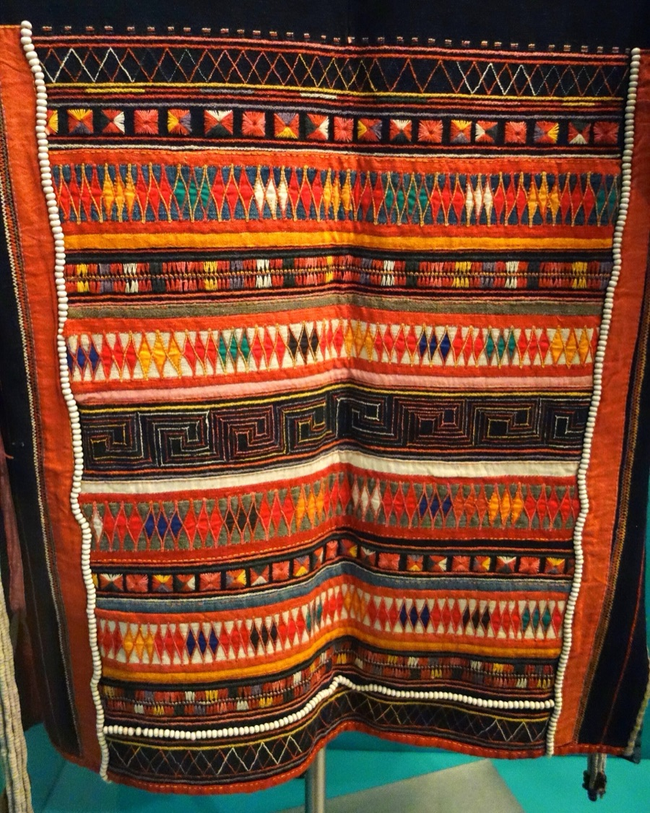

Five ways in, one open todayห้าทางเข้า เปิดแล้วหนึ่งทาง
The US route works now. The board supplies the details for the rest.3
ช่องทางสหรัฐใช้ได้แล้ววันนี้ ส่วนที่เหลือรอข้อมูลจากคณะกรรมการ3
Giving desk: every donor, every country →โต๊ะรับบริจาค: ผู้บริจาคทุกคน ทุกประเทศ →
CCA's donate page sends American donors to Fractured Atlas, its fiscal agent (the New York non-profit that receives gifts for a project). Gifts there carry 501(c)(3) tax benefits.3
หน้าบริจาคของ CCA พาผู้บริจาคชาวอเมริกันไปที่ Fractured Atlas ซึ่งเป็น fiscal agent (องค์กรไม่แสวงหากำไรในนิวยอร์กที่รับเงินบริจาคแทนโครงการ) เงินบริจาคที่นั่นได้สิทธิประโยชน์ทางภาษีแบบ 501(c)(3)3
From 2026, Thai donors deduct gifts from tax only through e-Donation, the Revenue Department's electronic receipt system. A foundation joins it once registered.7
ตั้งแต่ปี 2569 ผู้บริจาคในไทยหักลดหย่อนภาษีจากเงินบริจาคได้ผ่านระบบ e-Donation ของกรมสรรพากรเท่านั้น มูลนิธิเข้าร่วมระบบได้เมื่อจดทะเบียนแล้ว7
"Be a Good Ancestor" is the heading of CCA's support page. A bequest can be any size, pays years later, and counts as a pledge in a campaign today.4
"Be a Good Ancestor" (จงเป็นบรรพบุรุษที่ดี) คือหัวข้อของหน้า Support บนเว็บไซต์ CCA ของฝากในพินัยกรรมมีมูลค่าเท่าใดก็ได้ ส่งมอบอีกหลายปีข้างหน้า และนับเป็นคำมั่นในแคมเปญได้ตั้งแต่วันนี้4
I give to [full legal name of the foundation, as registered], of [address], [the sum of ___] / [___ % of my residuary estate] / [the following object: ___], for its general purposes / for the Heritage Center / for the Akha Oral Tradition School.
ข้าพเจ้าขอยกให้ [ชื่อมูลนิธิตามที่จดทะเบียน] ที่อยู่ [ที่อยู่] เป็น [เงินจำนวน ___ บาท] / [ร้อยละ ___ ของทรัพย์สินส่วนที่เหลือ] / [ทรัพย์สินดังนี้ ___] เพื่อใช้ในกิจการของมูลนิธิ / เพื่อศูนย์มรดกวัฒนธรรม / เพื่อโรงเรียนประเพณีปากเปล่าอาข่า
Sample wording for discussion, Hongdam's draft. A lawyer in the donor's country writes the final text.
ถ้อยคำตัวอย่างสำหรับพิจารณา เป็นร่างของ Hongdam ทนายความในประเทศของผู้บริจาคเป็นผู้ร่างข้อความฉบับจริง
CCA holds hundreds of textiles, jewelry, instruments and sacred objects of the Akha, Lahu, Lisu, Hmong, Iu Mien and Karen. Digitizing began in spring 2026.1
A donor of objects, or of a collection, asks for a deed of gift (the signed paper that transfers ownership) before anything else.14
CCA มีผ้าทอ เครื่องประดับ เครื่องดนตรี และวัตถุศักดิ์สิทธิ์ของชาวอาข่า ลาหู่ ลีซู ม้ง เมี่ยน และกะเหรี่ยง หลายร้อยชิ้น เริ่มแปลงเป็นข้อมูลดิจิทัลในฤดูใบไม้ผลิปี 25691
ผู้บริจาคที่ให้วัตถุหรือชุดสะสมจะขอหนังสือยกให้ (deed of gift เอกสารที่ลงนามโอนความเป็นเจ้าของ) ก่อนเรื่องอื่น14

Ten to fifteen people give most of itผู้บริจาคสิบถึงสิบห้าคน ให้เป็นส่วนใหญ่14
6–8 donors6–8 ราย
carry 40–60% of a capital campaign's goal.8
ให้ 40–60% ของเป้าในแคมเปญระดมทุนใหญ่8
A US$3M campaign, tier by tierแคมเปญ 3 ล้านดอลลาร์สหรัฐ ทีละชั้น
Illustration from campaign norms, not a CCA planภาพประกอบจากแบบแผนของแคมเปญระดมทุน ไม่ใช่แผนของ CCABar and tier shapes show order, not scale. Tap a tier or a bar.รูปทรงและแท่งแสดงลำดับ ไม่ใช่สัดส่วนจริง แตะแต่ละชั้นหรือแต่ละแท่ง Source: 8, 9, 14.ที่มา: 8, 9, 14
Three clocks runningสามนาฬิกา ที่กำลังเดิน
Grants fund the school, the archive and the collection, not a building: the large funders that fit CCA exclude construction.14
ทุนสนับสนุนโรงเรียน คลังเอกสาร และชุดสะสม ไม่ใช่อาคาร: ผู้ให้ทุนรายใหญ่ที่เหมาะกับ CCA ไม่ให้ทุนก่อสร้าง14
Each clock counts to 23:59 Bangkok time on its date; EMKP closes 12:00 GMT.นาฬิกาแต่ละเรือนนับถึง 23:59 น. เวลากรุงเทพฯ ของวันที่กำหนด ยกเว้น EMKP ที่ปิดรับเวลา 12:00 น. GMT
Melodies and Motifs in the Mountains
ทำนองและลวดลายบนดอย
Chiang Mai City Craft Space, 280 Tha Phae Road · 3 Oct 2026 – 10 Jan 2027 · open from 10:00, closed Mondays (86 open days).13
City Craft Space เชียงใหม่ 280 ถนนท่าแพ · 3 ต.ค. 2569 – 10 ม.ค. 2570 · เปิด 10:00 น. ปิดวันจันทร์ (เปิดทำการ 86 วัน)13
Five questions a large donor asks firstห้าคำถาม ที่ผู้บริจาครายใหญ่ ถามก่อน
Tick what is ready.14
ติ๊กข้อที่พร้อมแล้ว14
The Nam Phrae land: five questions for the owner →ที่ดินน้ำแพร่: ห้าคำถามถึงเจ้าของ →
Meet at The Algonquinนัดพบที่ The Algonquin
Pick a time. Lunch: NaN.
เลือกเวลา ค่าอาหารกลางวัน: NaN
Send NaN a timeส่งเวลาให้ NaN